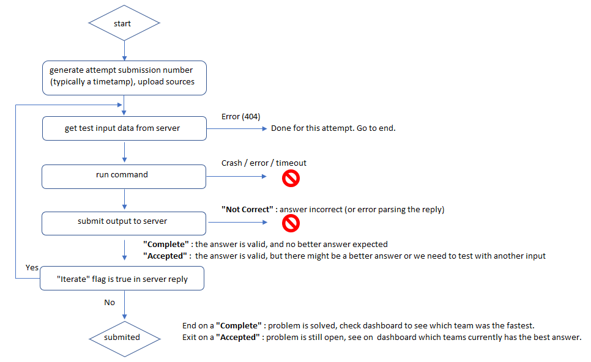

Command line examples to submit solution to coding challenges pi, prime and scheduling (respectively coded with NodeJs, Python and a compiled language):
python code-contest-submit.py --uid "team-coimbra-2018" --pid "pi" --cmd node pi.js --src pi.js python code-contest-submit.py --uid "team-ensmp-2003" --pid "prime" --cmd python prime.py --src prime.py python code-contest-submit.py --uid "team-ist-2017" --pid "scheduling" --cmd scheduling.exe --src makefile scheduling.go
Workflow used by submission script

Note: input files saved in .code-contest subfolder.